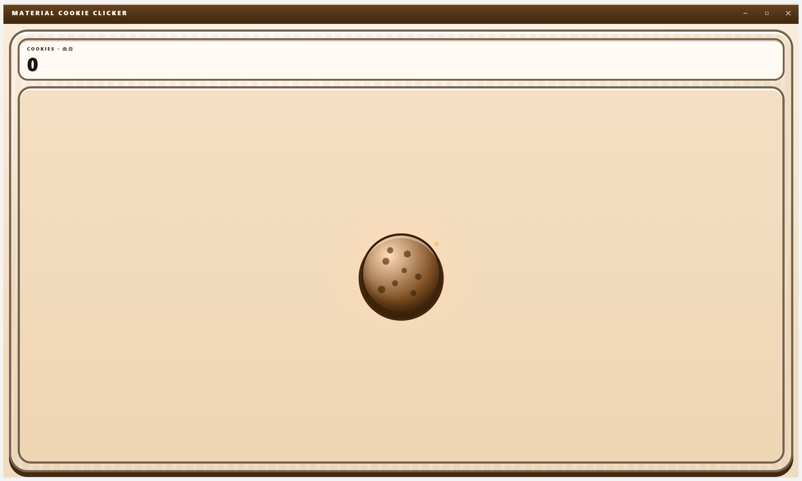

Material Cookie Clicker
A cookie clicker for Windows where the application's own features — the command palette, the regex builder, the authenticator, the file converter — are the game's tech tree. Free, unsigned by policy, offline by design, and bilingual in English and Hong Kong Cantonese.
What it is
Click a cookie. Buy twenty tiers of increasingly unreasonable machinery, from a Cursor up to a Prism. Spend a hundred and seventy-nine upgrades, chase two hundred and one achievements, catch golden cookies, unlock the application's own twenty features as in-game tools, then ascend and throw it all away for a permanent multiplier. It runs with the network unplugged, it costs nothing, and it never asks you for an account.
撳曲奇。由「掂手指」買到「稜鏡」，二十級越嚟越荒謬嘅機器。用一百七十九個升級、追二百零一個成就、執金曲奇、將個應用程式自己二十個功能解鎖做遊戲道具，然後飛昇，全部清晒換返個永久倍數。冇網都玩得，唔使畀錢，唔使開戶口。
Where the project actually is
The game is playable. This release ships the single game surface — HUD readouts, the cookie hero, the docked shop rail with the Diesel Depot status card in its footer, and the upgrade shelf, all on one screen — plus the Diesel Factory, Achievements, Tools, Statistics and Prestige panels. All 514 tests pass, the application builds, and the surface, its anchored panels, its dark theme, two random events, the Mouse Raid and the Diesel Factory’s production floor and shipping station were all photographed from the real running build. You can see the photographs in the capture matrix.
Two things are still honestly unverified, and they stay listed here until someone has actually seen them: the narrow-width shop drawer was verified by forcing its breakpoint rather than by really resizing the window, since every capture is one maximised window; and no golden-cookie spawn has been photographed, though the separate random-event pool now has been.
- 20Generator tiers
- 179Upgrades
- 201Achievements
- 20Tools in the tree
- 28Purchasable controls
Those four numbers are counted from the definition lists in the source tree, not from a wish list, and all four are now on screen in the running application: the shop rail lists the generators, the upgrade shelf counts the upgrades, the Achievements tab counts the badges and the Tools tab counts the tools.
Capture matrix
Nine photographs of the real thing. Every image below was captured from the built application — not a mock-up, not a design spec — running maximised on an off-screen Windows desktop and photographed with the Win32 PrintWindow API. Two of them start from a save written into the running application’s own storage to skip the grind; everything bought in them was bought by pressing the real controls. The dark-theme capture is the one exception to “nothing was touched”: it needed data-theme="dark" set on the built renderer’s root element, because the application otherwise follows the operating system’s colour scheme.

![The same window shortly after the Shop Sign upgrade is bought. The COOKIES plate now reads 2.22, two console emblem buttons have appeared at the top right labelled ACHIEVEMENTS and TOOLS, each with a small illustrated badge, and a SHOP rail has docked down the right-hand side. The rail carries a generator search field, one Cursor row reading plus 0.1 per second each with an owned count of 0, an x1 / x10 / x100 / Max stepper and a Buy button priced at 15 cookies, and beneath it a single padlocked row marked ??? that says to buy the tier above to find out what it is. The cookie still sits alone in the panel on the left and there is still no upgrade strip.](assets/captures/shop-revealed.png)
![The full game surface on a progressed save. Three HUD plates run across the top reading COOKIES 3.926 billion, PER SECOND 181.7 thousand and PER CLICK 2.04, each labelled in English and Cantonese, and four console emblem buttons sit at the top right: ACHIEVEMENTS, TOOLS, STATISTICS and PRESTIGE. The cookie hero fills the left panel, with the lines 181.7 thousand per second and hold to click repeatedly under it. Below that the UPGRADES strip reads 6 / 79 and shows ticket cards for Shop Sign, Upgrade Catalogue, Steady Hand, Fuel Contract, Reinforced Finger and Sturdier Ovens, all marked already owned, then Double Click Double Trouble priced at 1 million. The SHOP rail on the right lists Cursor with 10 owned and Grandma with 1, and the Diesel Depot is docked underneath it as the rail footer, showing 0 litres minted, 36 vouchers minted, a line saying WinForge has not read the ledger yet, and a Mint 1 L button priced at 1 thousand cookies.](assets/captures/game-progressed.png)
![The same progressed surface rendered in the dark arcade-night theme. The cabinet is a near-black warm brown, the cookie glows pale gold on it, the three HUD plates sit in dark recessed bezels with light type, and the upgrade tickets are olive-gold plates with gold text. The shop rail and the Diesel Depot footer are dark panels; the depot reads 36 litres minted and 76 vouchers minted, and its Mint 1 L button is priced at 153.2 thousand cookies. The four console emblems keep their colour against the dark cabinet.](assets/captures/game-dark.png)
data-theme="dark" on the built renderer’s root element in dist/, relaunching, and restoring the file afterwards — the application otherwise follows the operating system’s scheme.![The Achievements panel open as an anchored dialog. The game surface behind it is dimmed to a flat brown, and the panel hangs from the ACHIEVEMENTS console emblem at the top right, with a small pointer touching that button. Its header carries the medal emblem, the title ACHIEVEMENTS in English and Cantonese, and a round close button. Inside, a line reads 15 / 100 unlocked, then a search field, then a grid of round badges: First Bite, 1 Cursor, 10 Cursors, 1 Grandma and 1 Cookie Farm are struck gold medals with glowing rims, and every other badge in view is a grey silhouette marked ??? and not unlocked.](assets/captures/dialog-achievements.png)
![The Tools panel open as an anchored dialog over the dimmed game surface, hanging from the TOOLS console emblem. A callout at the top states, in English and Cantonese, that every real app feature is already open, beside a button reading what unlocking actually does. Below it a plate reads 9 / 20 tools unlocked with a progress bar, a Tool progression: on toggle switched on, and a note that the toggle changes display and bonuses only. Under a search field, Tier 1 is labelled Bronze, early game, with no prerequisites, and shows two cards: an undiscovered ??? Tool, and an unlocked Regex Builder carrying the gameplay bonus Cursor output times 1.1. Both cards end in an ALWAYS AVAILABLE banner saying the real app feature is already available and the button only opens it.](assets/captures/dialog-tools.png)
![The Statistics panel open as an anchored dialog over the dimmed game surface, hanging from the STATISTICS console emblem. Ten stat tiles, each a plate with a bilingual label and a large tabular number, read: total cookies baked 5.051 billion, lifetime cookies 5.051 billion, cookies per second 181.7 thousand with a no change this session note, click power 2.04 with the same note, total clicks 0, ascension points 0, prestige runs 0, achievements unlocked 15 / 100, tools unlocked 9 / 20, and clock anomalies caught 0.](assets/captures/dialog-statistics.png)
![The Prestige panel open as an anchored dialog over the dimmed game surface, hanging from the PRESTIGE console emblem. Four tiles read ascension points 0, production multiplier times 1.00, prestige runs 0, and lifetime cookies this run 5.054 billion. Below them an Ascension projection panel says, in English and Cantonese, that you are not eligible yet and must reach 1 trillion lifetime cookies, and that each ascension point is a permanent plus one percent to total production, so ascending now would take you to times 1.00. A Permanent upgrades panel underneath reads nothing yet, and explains that a prestige currently resets every upgrade.](assets/captures/dialog-prestige.png)
![The Diesel Depot caught mid-mint on the progressed light-theme surface. The depot card in the shop rail footer is drawn over by the pump animation: a jerry can tipped up and pouring, a faint hose and nozzle sweeping in behind it, a ghosted 14 rolling up beneath the litres figure, and a printed slip at the lower right reading VOUCHER ed2d41c7. The depot figures read 14 litres minted and 50 vouchers minted, and the Mint 1 L button has climbed to 7.076 thousand cookies. The PRESTIGE console emblem at the top right carries a focus ring.](assets/captures/diesel-mint.png)
![The Diesel Factory panel open as an anchored dialog over the dimmed cookie surface, hanging from the DIESEL FACTORY console emblem. A production floor shows three stations joined by pipes: CRUDE INTAKE with a nodding-donkey derrick reading 3.75 bbl per second, REFINING with three fractionating columns reading 1.00 of 1.00 litres per second, and STORAGE with two vertical gauges, a dark crude gauge nearly full and a green diesel gauge at about three quarters, reading 63.2 of 85 litres. All three stations are outlined in green and the status line reads Running. Six figure tiles below give crude in the yard 169.6 of 170 barrels, crude per second 3.75, litres per second 1.00, crude per litre 2.125 barrels, tank capacity 85 litres and litres manufactured 403.2.](assets/captures/factory-floor.png)
![The WinForge shipping station section of the Diesel Factory panel. A wide button reads Ship 31 L to WinForge in English and Cantonese. Below it a note says shipping draws the tanks down, a voucher is written for litres this factory really made, and no cookies change hands at this counter. A dashed panel holds a Ship automatically checkbox with the caption sends a lorry once the tanks reach 100 percent full. Four figure tiles read ready to ship 31 litres, litres shipped 510 litres, vouchers minted 85, and consumed by WinForge 76. The ledger path at the bottom names the AppData DingDingProjects exchange diesel-vouchers.json file. The equipment shop begins below with a Crude Well row showing 50 owned and a buy button priced 2,167,315 cookies.](assets/captures/factory-ship.png)
No golden-cookie spawn: the spawn window is five to fifteen minutes and no capture run has caught one yet. The general random-event pool is a different schedule and two of its events — Cookie Rain and the Oven Hiccup — were photographed; those two images live on that feature page rather than in this matrix. No genuinely narrow window either — every capture here is one maximised window, so the shop-drawer breakpoint and the bottom-sheet behaviour behind it remain checked by forcing the breakpoint rather than by really resizing the application. The Settings panel is photographed on the feature page for language and humour, but from a fresh profile only — no capture shows it opened from a progressed save, or reached from a tool card's “Open it now”. The factory's automation branch is unit-tested but has never shipped a lorry in front of a camera. Several captures above — the full surface, the dark theme, and the mid-pump depot — predate the diesel factory and still show the shop rail's old buy-litres-with-cookies footer; they are true photographs of builds that shipped, and are labelled rather than quietly replaced. The prestige two-key confirmation gate ships but sits below the fold of the Prestige capture, and the deep end of the generator ladder — everything past Shipment — was never reached, so nothing above that rung has been photographed.
Download
Windows installer, published on GitHub Releases.
There is no code-signing certificate and there will not be one. Windows SmartScreen will therefore warn you when you run the installer, and you will have to choose “More info” and then “Run anyway” to continue. That warning is accurate: Windows genuinely cannot verify who published this, and no amount of reassurance on a web page changes that. If you are not comfortable with it, do not install it — the full source is on GitHub and you can build it yourself.
Nobody ever pays anything for this application, and it asks for no account, no key and no network access.
The game, playable: the single game surface with the cookie, the shop rail and the upgrade strip, plus the Achievements, Tools, Statistics and Prestige tabs — all bilingual, all offline. The capture matrix above is what it actually looks like.
Also in this release: a Settings panel, reachable from the first frame of a new save, with a language-mode selector that really does switch the whole application between English, Cantonese and both, and two independent funny-level sliders whose values are stored across restarts.
Not in this release: any per-level difference in the writing — the copy has one voice per language so far, so the funny levels are stored and honoured but change nothing you can read yet. The dark theme is photographed for the game surface only.
Every feature area
Each article below describes the behaviour, how it is configured, and how much of it is real today.
-
Cookie clicking and the CPS loop
The primary click target, click multipliers, the cookies-per-second accumulator, and the offline-progress rules that make a closed window honest.
Read more -
The 20-tier generator ladder
Cursor up to the Wok of the Gods: twenty generator tiers, a constant 1.15 cost curve, and the buy-quantity stepper.
Read more -
Upgrades
A hundred and seventy-nine upgrades: click lines, global lines, a golden-cookie line, the kitten line that drinks your milk, five stacking tiers per generator, and a synergy in both directions for every neighbouring pair.
Read more -
Achievements
Two hundred and one achievements, generated from eleven milestone families, each one pouring another 4% of milk.
Read more -
Golden-cookie events
A seeded, replayable random-event schedule: frenzy, click frenzy and windfall.
Read more -
Random events
Sixteen events on a bounded random schedule — frenzies, a Clot, a chain and a two-button choice — three of them setbacks.
Read more -
The Tools tech tree
Twenty of the application’s own features, doubling as in-game unlockables — and the contract that an unlock never gates the real feature.
Read more -
Statistics
The counters the engine actually keeps, including an honest clock-anomaly count.
Read more -
Prestige (ascend)
A cube-root ascension curve, +1% production per point, behind a two-key destructive-action gate.
Read more -
The diesel factory
Cookies buy the plant; the plant makes the diesel. A four-stage production line — wells, refining, tanks, depot — that stalls honestly and ships real litres to WinForge.
Read more -
The control economy
Every setting and every button is bought — dragging, minimize, maximize, resize, the search fields, the stepper. Twenty-eight rungs, fifteen controls, close never for sale.
Read more -
Bilingual text and the funny-level sliders
English and Hong Kong Cantonese side by side, with two independent 1–5 humour sliders — one per language.
Read more
How this site is built
This site follows the same design system as the game — the v2 “arcade cabinet” specs in design/: radial oven-glow backgrounds, marquee headings on bevelled plates, solid offset shadows with no blur anywhere, 2–7px borders, and the same colour tokens in light and dark. It is explicitly not Material Design 3; the role names (primary, surface, outline) are kept as vocabulary only.
It is also entirely self-contained. There is no CDN, no remote font, no remote image, no analytics and no network request of any kind: the hero cookie is drawn with CSS gradients, the capture matrix loads PNG files committed alongside these pages, the search index is baked into a local module, and the only external addresses anywhere in this site are the two GitHub links, which you have to click.